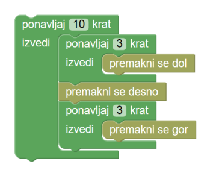

Robot je naletel na zelo vijugasti predel Luninega površja. Sprogramiraj robota, da bo prišel do zelenega območja na koncu poti. Ne pozabi, da lahko v zanko vključiš več kot samo eno kocko! Zanka v tem primeru ponavlja zaporedje kock!
V zanko lahko vstaviš tudi novo zanko. Temu pravimo gnezdenje zank. Kocke 'ponavljaj' drugo znotraj druge lahko gnezdiš tako: 
Namig: Stolpec belih polj je visok 10 polj.
Ta stopnja je skoraj enaka kot prejšnja. Ali bo tudi rešitev enaka in zakaj (ne)?